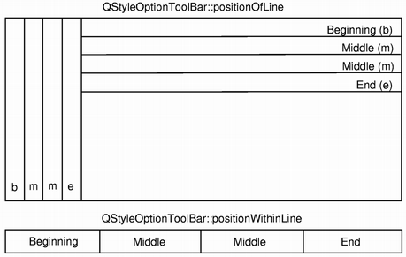

QStyleOptionToolBar¶
Detailed Description¶
The
PySide2.QtWidgets.QStyleOptionToolBarclass is used to describe the parameters for drawing a toolbar.
PySide2.QtWidgets.QStyleOptionToolBarcontains all the information thatPySide2.QtWidgets.QStylefunctions need to drawPySide2.QtWidgets.QToolBar.For performance reasons, the access to the member variables is direct (i.e., using the
.or->operator). This low-level feel makes the structures straightforward to use and emphasizes that these are simply parameters used by the style functions.The
PySide2.QtWidgets.QStyleOptionToolBarclass holds the lineWidth and the midLineWidth for drawing the widget. It also stores information about which area the toolbar should be located in, whether it is movable or not, which position the toolbar line should have ( positionOfLine ), and the toolbar’s position within the line ( positionWithinLine ).In addition, the class provides a couple of enums: The
QStyleOptionToolBar.ToolBarFeatureenum is used to describe whether a toolbar is movable or not, and theQStyleOptionToolBar.ToolBarPositionenum is used to describe the position of a toolbar line, as well as the toolbar’s position within the line.For an example demonstrating how style options can be used, see the Styles example.
See also
-
class
PySide2.QtWidgets.QStyleOptionToolBar¶ -
class
PySide2.QtWidgets.QStyleOptionToolBar(other) -
class
PySide2.QtWidgets.QStyleOptionToolBar(version) Parameters: - other –
PySide2.QtWidgets.QStyleOptionToolBar - version –
PySide2.QtCore.int
Constructs a
PySide2.QtWidgets.QStyleOptionToolBar, initializing the members variables to their default values.Constructs a copy of the
otherstyle option.- other –
-
PySide2.QtWidgets.QStyleOptionToolBar.StyleOptionType¶ This enum is used to hold information about the type of the style option, and is defined for each
PySide2.QtWidgets.QStyleOptionsubclass.Constant Description QStyleOptionToolBar.Type The type of style option provided ( SO_ToolBarfor this class).The type is used internally by
PySide2.QtWidgets.QStyleOption, its subclasses, andqstyleoption_cast()to determine the type of style option. In general you do not need to worry about this unless you want to create your ownPySide2.QtWidgets.QStyleOptionsubclass and your own styles.See also
QStyleOptionToolBar.StyleOptionVersion
-
PySide2.QtWidgets.QStyleOptionToolBar.StyleOptionVersion¶ This enum is used to hold information about the version of the style option, and is defined for each
PySide2.QtWidgets.QStyleOptionsubclass.Constant Description QStyleOptionToolBar.Version 1 The version is used by
PySide2.QtWidgets.QStyleOptionsubclasses to implement extensions without breaking compatibility. If you useqstyleoption_cast(), you normally do not need to check it.See also
QStyleOptionToolBar.StyleOptionType
-
PySide2.QtWidgets.QStyleOptionToolBar.ToolBarPosition¶ - 
This enum is used to describe the position of a toolbar line, as well as the toolbar’s position within the line.
The order of the positions within a line starts at the top of a vertical line, and from the left within a horizontal line. The order of the positions for the lines is always from the parent widget’s boundary edges.
Constant Description QStyleOptionToolBar.Beginning The toolbar is located at the beginning of the line, or the toolbar line is the first of several lines. There can only be one toolbar (and only one line) with this position. QStyleOptionToolBar.Middle The toolbar is located in the middle of the line, or the toolbar line is in the middle of several lines. There can several toolbars (and lines) with this position. QStyleOptionToolBar.End The toolbar is located at the end of the line, or the toolbar line is the last of several lines. There can only be one toolbar (and only one line) with this position. QStyleOptionToolBar.OnlyOne There is only one toolbar or line. This is the default value of the positionOfLine and positionWithinLine variables. See also
positionWithinLine positionOfLine
-
PySide2.QtWidgets.QStyleOptionToolBar.ToolBarFeature¶ This enum is used to describe whether a toolbar is movable or not.
Constant Description QStyleOptionToolBar.None The toolbar cannot be moved. The default value. QStyleOptionToolBar.Movable The toolbar is movable, and a handle will appear when holding the cursor over the toolbar’s boundary. See also
features
QToolBar.isMovable()
-
PySide2.QtWidgets.QStyleOptionToolBar.positionOfLine¶
-
PySide2.QtWidgets.QStyleOptionToolBar.positionWithinLine¶
-
PySide2.QtWidgets.QStyleOptionToolBar.toolBarArea¶
-
PySide2.QtWidgets.QStyleOptionToolBar.features¶
-
PySide2.QtWidgets.QStyleOptionToolBar.lineWidth¶
-
PySide2.QtWidgets.QStyleOptionToolBar.midLineWidth¶
© 2018 The Qt Company Ltd. Documentation contributions included herein are the copyrights of their respective owners. The documentation provided herein is licensed under the terms of the GNU Free Documentation License version 1.3 as published by the Free Software Foundation. Qt and respective logos are trademarks of The Qt Company Ltd. in Finland and/or other countries worldwide. All other trademarks are property of their respective owners.